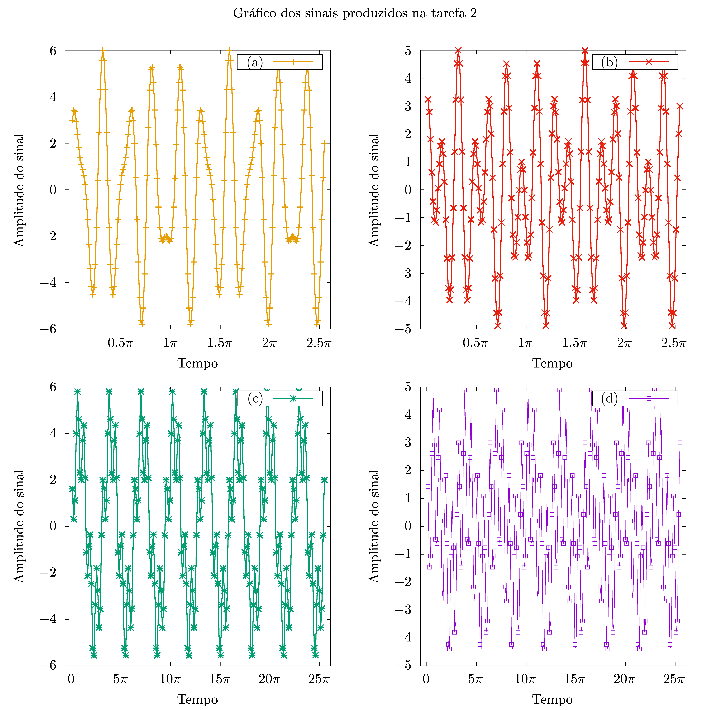
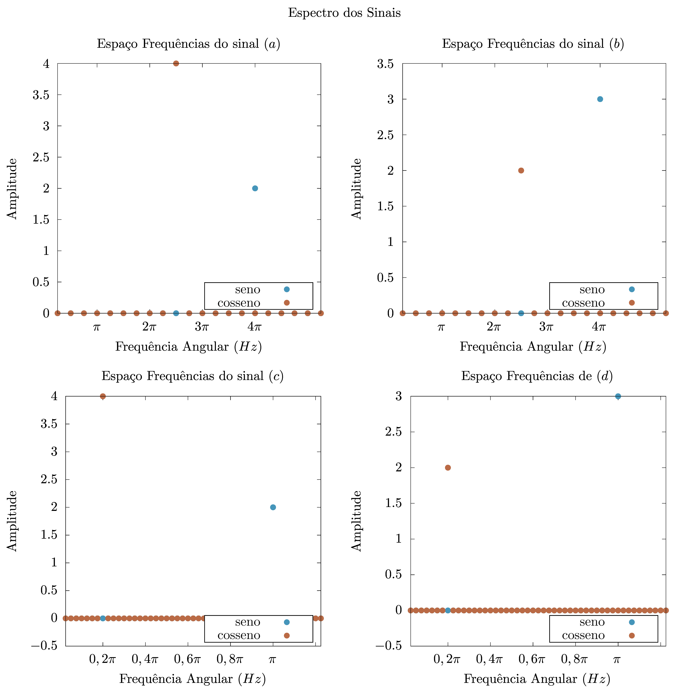
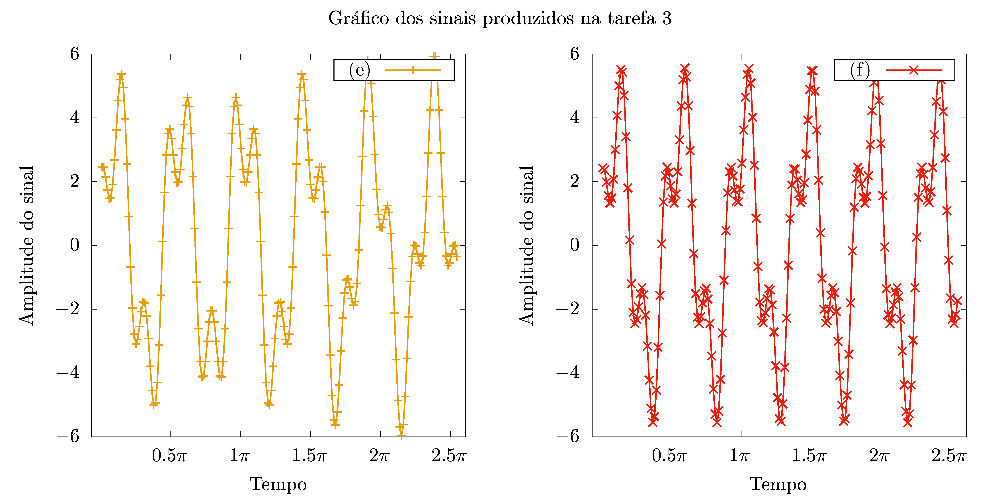
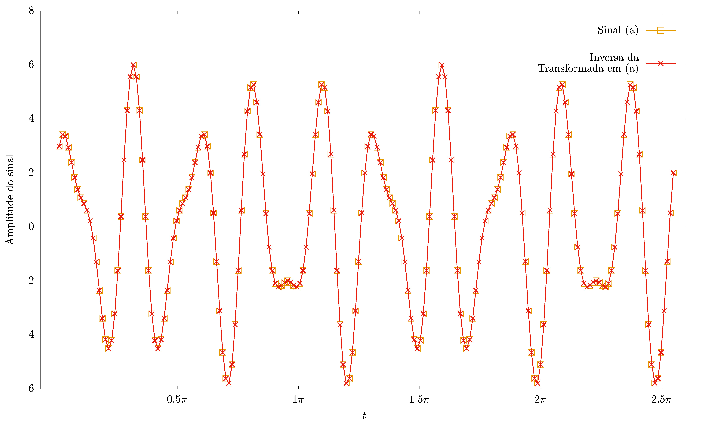
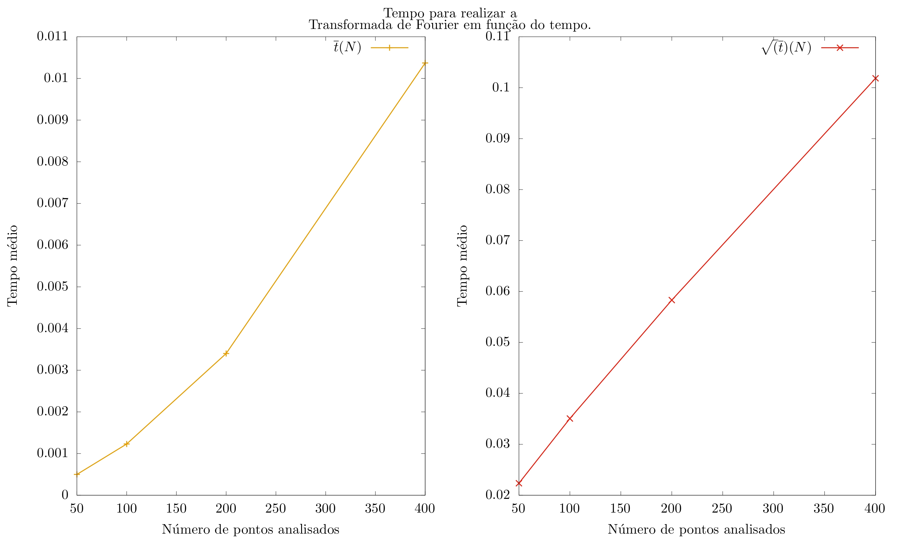

ANÁLISE ESPECTRAL POR
TRANSFORMADAS DE FOURIER
Edgard Macena Cabral Nº 11820833
Março 2023
Nessa tarefa, buscamos analisar a Transformada Discreta de Fourier sem nenhuma aceleração. Criamos um programa que realiza a transformada e outro que realiza sua inversa. Observamos que, para alguns casos, essas operações são bem comportadas, e conseguimos recuperar o sinal sem dificuldades. Observamos também que, para outras sinais obtivemos um reflexo em torno da frequência de Nyquist, provando que a maior frequência que podemos obter com a transformada é \(\frac{1}{2\Delta t}\). Por fim, vimos a relação entre o número N de pontos e o tempo de 50 execuções do programa, observando um padrão bastante quadrático.
Introdução
A transformada de Fourier é uma transformação que nos leva do espaço das amplitude de um sinal para um espaço de frequências. Para sinais contínuos, podemos escrever:
Porém, na física experimental, da análise da luminosidade de estrelas na busca de exoplanetas ao estudo do movimento de um pêndulo no laboratório de física I, trabalhamos essencialmente com dados discretos.
Para adequar a transformada aos dados laboratoriais, usamos as substituições \(t_j = j\Delta t\), \(f_k = \frac{k}{N\Delta t}\), que nos dão:
Conseguimos também obter a inversa através de
Nessas equações, a razão de irmos apenas até \(k < N/2\) está ligada a frequência de Nyquist, que pode ser entendida como a frequência associada ao menor comprimento de onda que pode formar um modo fundamental entre pontos de data consecutivos.
Caso a frequência do sinal seja maior que a frequência de Nyquist, o gráfico, obtemos um pico relacionada à reflexão da verdadeira frequência do sinal com a de Nyquist.
Como já dito, transformadas de Fourier são amplamente usadas na Física, então é importante que possamos tê-la eficientemente. Podemos estimar com facilidade a ordem do tempo de execução. Temos \(N\) termos, cada um dos quais é calculado com uma soma de \(\frac{N}{2}\) termos. A ordem do tempo de execução é então da ordem de ~\(N^2\).
Geração de dados
Para gerar os dados, usamos a equação a seguir:
\[t_{i} = i\Delta t,\ \ i = 1, \cdots, N\]
Que foi executada no programa:
program gerarSinais implicit none real*8, parameter :: pi = 3.1415926537989 ! (a) N = 200, ∆t = 0.04, a1 = 2, a2 = 4, ω1 = 4πHz, ω2 = 2.5πHz ! (b) N = 200, ∆t = 0.04, a1 = 3, a2 = 2, ω1 = 4πHz, ω2 = 2.5πHz ! (c) N = 200, ∆t = 0.4, a1 = 2, a2 = 4, ω1 = 4πHz, ω2 = 0.2πHz ! (d) N = 200, ∆t = 0.4, a1 = 3, a2 = 2 ω1 = 4πHz, ω2 = 0.2πHz call escreveSinal(200, 0.04d0, 2.d0, 4.d0, 4.d0*pi, 2.5d0, "a") call escreveSinal(200, 0.04d0, 3.d0, 2.d0, 4.d0*pi, 2.5d0, "b") call escreveSinal(200, 0.4d0, 2.d0, 4.d0, 4.d0*pi, 0.2d0, "c") call escreveSinal(200, 0.4d0, 3.d0, 2.d0, 4.d0*pi, 0.2d0, "d") end program gerarSinais subroutine escreveSinal(N, dt, a1, a2, w1, w2, label) real*8, intent(in) :: a1, a2, w1, w2, dt integer, intent(in) :: N character, intent(in) :: label real*8 :: calculaSinal integer :: i open(1, file="saida-2-"//label) do i = 1, N write(1, *) i*dt, calculaSinal(i*dt, a1, a2, w1, w2) end do close(1) end subroutine escreveSinal function calculaSinal(t, a1, a2, w1, w2) result(retval) real*8, intent(in) :: a1, a2, w1, w2, t real*8 :: retval retval = a1*cos(w1*t) + a2*sin(w2*t) end function calculaSinal
O programa foi executado sobre as séries de parâmetros
\[(a)\ \ N = 200, \Delta t = 0,04,\ a_1 = 2,\ a_2 = 4,\ \omega_1 = 4\pi Hz,\ \omega_2 = 2,5\pi Hz\] \[(b)\ \ N = 200, \Delta t = 0,04,\ a_1 = 3,\ a_2 = 2, \omega_1 = 4\pi Hz,\ \omega_2 = 2,5\pi Hz\] \[(c)\ \ N = 200, \Delta t = 0,4,\ a_1 = 2,\ a_2 = 4,\ \omega_1 = 4\pi Hz,\ \omega_2 = 0,2\pi Hz\] \[(d)\ \ N = 200, \Delta t = 0,4,\ a1 = 2,\ a2 = 4, ω1 = 4\pi Hz,\ ω2 = 2,5\pi Hz\]
Os resultados estão no gráfico a seguir

Figure 1: Sinais gerados para os testes seguintes.
Notamos que as séries representam uma boa variedade de sinais. A séries \((a)\) e \((b)\) são parecidas em termos de frequências, mas as amplitudes diferentes implicam em formatos bastantes diferentes, mesmo compartilhando alguns picos e vales, com algo parecido entre as séries \((c)\) e \((d)\). Ao mesmo tempo \((a)\) e \((c)\) têm mesma amplitude, o que não chega a fazer uma série parecida, pelos picos e vales serem bastante distintos, com o mesmo ocorrendo entre a \((b)\) e \((d)\)
Transformada de Fourier
Para a Transformada de Fourier, usamos o programa a seguir:
program gerarEspacoFrequencias implicit none real*8, dimension(200) :: y_t real*8 :: dt integer :: N call leTabela(dt, y_t, N) call escreveFrequencias(y_t, dt, N) end program gerarEspacoFrequencias subroutine leTabela(dt, y_t, N) real*8, dimension(200), intent(out) :: y_t real*8, intent(out) :: dt integer, intent(out) :: N real*8 :: ignorada integer :: i open(1, file="data.in") do i = 1, 200 read(1,*, end=10) ignorada, y_t(i) if ( i == 1 ) then dt = ignorada end if 10 end do close(1) N = i - 1 end subroutine leTabela subroutine escreveFrequencias(y_t, dt, N) real*8, dimension(200), intent(in) :: y_t real*8, intent(in) :: dt integer :: k, N, M complex*16 :: Yk, currYk ! M é o maior natural < N/2 M = floor((N-1)/2.d0) open(2, file="data.out") do k = 1, M currYk = Yk(k, y_t, N) write(2,*) k/(200*dt), real(currYk), aimag(currYk) end do close(2) end subroutine escreveFrequencias function Yk(k, y_t, N) integer, intent(in) :: k integer, intent(in) :: N real*8, dimension(200):: y_t complex*16 :: Yk, i = (0,1) real*8, parameter :: pi = 3.1415926537989 integer :: j Yk = (0,0) somatoria : do j = 1, N Yk = Yk + y_t(j)*exp(2.d0*pi*i*j*k/N) end do somatoria end function Yk
Desse programa, produzimos, para os nossos sinais, os seguintes gráficos de espectro:

O gráfico mostrado aqui foi produzido de maneira a reforçar os pontos onde temos os dados são relevantes. Nele, podemos ver o que as frequências dos sinais \((a)\) e \((b)\) foram recuperados sem dificuldades. Já para série \((c)\) e \((d)\), vemos que não conseguimos recuperar a frequência angular de \(4\pi Hz\) (\(2Hz\) em frequência linear).
Isso ocorre pois essa frequência está bem acima da máxima que Nyquist. De fato, fazendo \[f_{Nyquist} = \frac{1}{2\cdot 0,4}\]
\[f_{Nyquist} = 1,25Hz\]
Podemos refletir nossa frequência \(2Hz\) em torno de Nyquist através de \((4)\) para obter
\[f_{encontrada} = 0,5Hz\]
Ou, em frequência, \(\pi Hz\). Como é visto no gráfico!!
Outros Sinais
Pelo mesmo programa da Geração de dados geramos os sinais a seguir
\[(e)\ \ N = 200, \Delta t = 0,04,\ a_1 = 2,\ a_2 = 4,\ \omega_1 = 4\pi Hz,\ \omega_2 = 1,4\pi Hz\] \[(f)\ \ N = 200, \Delta t = 0,04,\ a_1 = 2,\ a_2 = 4,\ \omega_1 = 4,2\pi Hz,\ \omega_2 = 1,4\pi Hz\]
Os gráficos desses dois sinais são os seguintes:

Gráficos bastantes normais, mas com dois detalhes importante: As frequências, bastantes próximas por sinal, não estão em harmonia com a frequência de sampleamento \(\omega_{Nyquist} = 25\pi Hz\). Ademais, as frequências de \((f)\) estão em harmonia entre si!
É natural de se esperar que essa harmonia e dissonância interfira na capacidade de um método discreto de samplear as frequências. Podemos ver isso no gráfico da transformada para essas funções:

Não temos mais a recuperação analiticamente perfeita que tinhamos nas séries anteriores, pois a dissonância entre os sinais e o sampleamento faz com que outras frequências representem perfeitamente o sinal no intervalo analisado.
É importante dizer que isso não deveria surpreender. Séries de Fourier analíticas também não tem representação única, e o intervalo tem uma influência sobre o resultado que obtemos.
Transformada Inversa
Usamos, seguindo a \((3)\), o programa:
program gerarEspacoAmplitude implicit none complex*16, dimension(100) :: Yk integer :: N call leTabela(N, Yk) call escreveAmplitude(Yk, N) end program gerarEspacoAmplitude subroutine leTabela(N, Yk) real*8 :: ignorada, Yk_real, Yk_imaginaria complex*16, dimension(100), intent(out) :: Yk integer, intent(out) :: N integer :: i open(1, file="../tarefa-1/data.out") do i = 1, 100 read(1,*, end=10) ignorada, Yk_real, Yk_imaginaria Yk(i) = complex(Yk_real, Yk_imaginaria) 10 end do N = i - 1 end subroutine leTabela subroutine escreveAmplitude(Yk, N) complex*16, dimension(100), intent(in) :: Yk ! Aqui não temos como obter o ! dt de maneira mais orgânica real*8 :: dt = 0.04d0 integer :: j complex*16 :: y_j, curr_y_j open(1, file="saida-4-11820833") do j = 1, 2*N curr_y_j = y_j(j, N, Yk) write(1,*) j*dt, real(curr_y_j) end do close(1) end subroutine escreveAmplitude function y_j(j, N, Yk) integer, intent(in) :: j complex*16, dimension(100), intent(in):: Yk integer, intent(in) :: N complex*16:: i = (0,1) complex*16 :: y_j real*8, parameter :: pi = 3.1415926537989 integer :: k somatoria : do k = 1, 100 y_j = y_j + Yk(k)*exp(-2.d0*pi*i*j*k/(2*(N+1))) end do somatoria y_j = y_j/N end function y_j
Obtivemos, para a série \((a)\), o gráfico a seguir

Nele, observamos uma ótima sobreposição entre a nossa série original e a recuperada pela nossa inversa, demonstrando a precisão do Método de Fourier.
Ficou até um pouco difícil fazer o gráfico das duas linhas de uma maneira que as duas linhas fossem visíveis!
Tempo de Execução
Como comentando na introdução, é esperado que o tempo de execução seja da ordem de \(N^2\). Para comprovarmos isso, fizemos um programa que executa a Transformada de Fourier sobre o sinal
Para \(N = 50,\ 100,\ 200,\ 400\).
Para monitorarmos o tempo de execução de cada N, usamos o módulo de cputime sobre 20 execuções da transformada para cada N, e depois tiramos a média aritmética. O código foi basicamente o do programa de Transformada, com as alterações girando em torno da contagem de tempo e das saídas:
program tempoPorN implicit none real*8 :: t_inicio, t_fim, delta_t integer :: i, j, N = 50 character*22, dimension(4) :: files files(1) = "entrega-5-050-11820833" files(2) = "entrega-5-100-11820833" files(3) = "entrega-5-200-11820833" files(4) = "entrega-5-400-11820833" open(2, file="../saida-5-11820833") do i = 1, 4 call cpu_time(t_inicio) do j = 1, 20 call gerarEspacoFrequencias(files(i)) end do call cpu_time(t_fim) delta_t = (t_fim - t_inicio)/10.d0 write(2, *) N, delta_t, sqrt(delta_t) N = N*2 end do end program tempoPorN subroutine gerarEspacoFrequencias(fileName) implicit none real*8, dimension(400) :: y_t character*22 :: fileName integer :: N call leTabela(fileName, y_t, N) call calculaFrequencias(y_t, N) end subroutine gerarEspacoFrequencias subroutine leTabela(fileName, y_t, N) character*22, intent(in) :: fileName real*8, dimension(400), intent(out) :: y_t integer, intent(out) :: N real*8 :: ignorada integer :: i open(1, file=fileName) do i = 1, 400 read(1,*, end=1) ignorada, y_t(i) if ( i == 1 ) then end if end do 1 close(1) N = i - 1 end subroutine leTabela subroutine calculaFrequencias(y_t, N) real*8, dimension(400), intent(in) :: y_t integer :: k, N, M complex*16 :: Yk, currYk M = floor((N-1)/2.d0) do k = 1, M currYk = Yk(k, y_t, N) end do end subroutine calculaFrequencias function Yk(k, y_t, N) integer, intent(in) :: k integer, intent(in) :: N real*8, dimension(400):: y_t complex*16 :: Yk, i = (0,1) real*8, parameter :: pi = 3.1415926537989 integer :: j Yk = (0,0) somatoria : do j = 1, N Yk = Yk + y_t(j)*exp(2.d0*pi*i*j*k/N) end do somatoria end function Yk
O resultado dos tempos médios está na tabela a seguir
| N | Tempo médio \((s)\) | Raiz do tempo médio \((s^{-2})\) |
|---|---|---|
| \(50\) | \(3,91\cdot 10 ^{-4}\) | \(1.97\cdot 10^{-2}\) |
| \(100\) | \(6,92\cdot 10 ^{-4}\) | \(2.63\cdot 10^{-2}\) |
| \(200\) | \(1,82\cdot 10 ^{-3}\) | \(4,27\cdot 10^{-2}\) |
| \(400\) | \(5.38\cdot 10 ^{-3}\) | \(7.33\cdot 10^{-2}\) |
Que podemos observar no gráfico a seguir

Uma relação bem quadrática, de fato!!